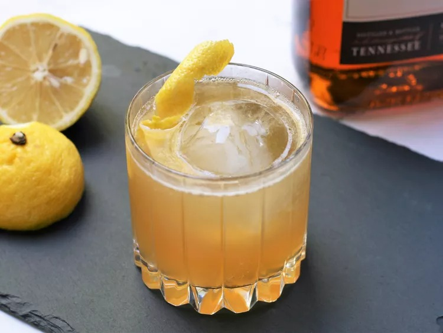

Gold Rush

Description
A Gold Rush cocktail is a riff on a whiskey sour using honey syrup instead of
simple syrup. The honey syrup is commonly made with a 1:1 ratio of honey to
water, but I find that a 2:1 ratio helps to better balance out the lemon juice and
bourbon. This makes enough syrup for 4 cocktails. Serve over a large ice sphere.
Ingredients
Honey Syrup:
- 1/4 cup honey
- 2 tablespoons water
Cocktail:
- 2 cups ice
- 2 fluid ounces bourbon
- 3/4 fluid ounce honey syrup
- 3/4 fluid ounce fresh lemon juice
- lemon twist, for garnish
Steps
-
In a small saucepan, combine honey and water over medium heat. Bring to a
simmer, stirring, until honey is dissolved. Remove from heat and cool
completely. To account for evaporation, add a splash of water to bring the total
volume of syrup up to 3 fluid ounces, if necessary.
-
Add 1 cup of ice to a cocktail shaker. Add bourbon, honey syrup and lemon juice.
Cover and shake until chilled, 15 to 20 seconds. Fill a rocks glass with remaining
ice cubes or 1 large ice sphere and strain cocktail over the ice. Garnish with
lemon twist.